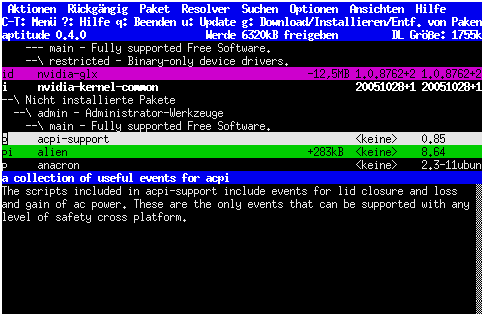

aptitude
Dieser Artikel wurde für die folgenden Ubuntu-Versionen getestet:
Dieser Artikel ist größtenteils für alle Ubuntu-Versionen gültig.
Zum Verständnis dieses Artikels sind folgende Seiten hilfreich:
 aptitude
aptitude  ist eine Erweiterung der Paketverwaltung APT (Advanced Packaging Tool), welche auf allen Debian-basierten Systemen und damit auch bei Ubuntu zum Einsatz kommt. Es handelt sich wie bei apt-get um ein Kommandozeilenprogramm, das aber zusätzlich eine grafische Oberfläche auf ncurses-Basis bietet.
ist eine Erweiterung der Paketverwaltung APT (Advanced Packaging Tool), welche auf allen Debian-basierten Systemen und damit auch bei Ubuntu zum Einsatz kommt. Es handelt sich wie bei apt-get um ein Kommandozeilenprogramm, das aber zusätzlich eine grafische Oberfläche auf ncurses-Basis bietet.
Im Gegensatz zu apt-get führt aptitude über Änderungen der installierten Pakete „genauer“ Buch, so dass nicht mehr benötigte Pakete automatisch erkannt und deinstalliert werden. Die Installationsgeschichte wird in ein Log geschrieben, wodurch später angezeigt werden kann, wann oder warum ein Paket installiert wurde.
Bei Ubuntu gehörte aptitude bis zur Version 10.10 zur Standardinstallation, wurde aber aus platztechnischen Gründen aus der Installations-CD entfernt. In der Server-Variante ist aptitude weiterhin vorinstalliert.
Installation¶
Aptitude kann über das folgende Paket installiert werden [1]:
aptitude
 mit apturl
mit apturl
Paketliste zum Kopieren:
sudo apt-get install aptitude
sudo aptitude install aptitude
Zusätzlich kann man noch das (englische) Handbuch zu aptitude installieren:
aptitude-doc-en (optional)
mit apturl
Paketliste zum Kopieren:
sudo apt-get install aptitude-doc-en
sudo aptitude install aptitude-doc-en
Bedienung¶
Wie oben bereits erwähnt, kann man aptitude entweder über die Kommandozeile oder die grafische Oberfläche in der Konsole bedienen. Wie bei der Paketverwaltung üblich, werden Root-Rechte für Schreibvorgänge, wie etwa bei Paketinstallationen, benötigt. Die allgemeine Syntax lautet:
sudo aptitude BEFEHL PAKET
Ruft man das Programm ohne Befehl und Paket auf, erscheint automatisch die grafische Version. Die grafische Version startet zwar auch ohne Root-Rechte, allerdings kann man dann nur suchen bzw. die Liste der installierten Pakete anschauen; man kann aber keine Pakete entfernen, installieren etc.
Grafische Oberfläche¶

Die Pakete werden vorsortiert und hierarchisch in Form einer aufklappbaren Ordnerstruktur dargestellt. In der grafischen Oberfläche werden die Pakete je nach „Zustand“ verschiedenfarbig dargestellt:
schwarz : Paket wird nicht verändert
rot : Paket ist kaputt oder kann nicht installiert werden
blau : Paket wird aktualisiert
weiß : Paketversion bleibt erhalten, kann aber aktualisiert werden
grün : Paket wird installiert
magenta : Paket wird gelöscht
aptitude kann vollständig über die Tastatur gesteuert werden. Alle Funktionen sind aber auch über ein Menü erreichbar, zu dem man mittels Strg + T gelangt. Im Folgenden sind einige Tasten erklärt:
| Übersicht Tasten | |
| Taste | Funktion |
| ↓ + ↑ | Auswahlbalken bewegen |
| ⏎ | Verzeichnis auf- und zuklappen |
| / | Suchen |
| N | Weitersuchen |
| L | Suchen, alle Pakete, auf die das Suchkriterium nicht zutrifft, werden aber ausgeblendet |
| I | Paketinformationen anzeigen |
| D | Abhängigkeiten anzeigen |
| U | Paketquellen aktualisieren |
| ⇧ + U | alle verfügbaren Aktualisierungen installieren |
| + | Paket zur Installation vormerken |
| - | Paket zum Löschen vormerken |
| = | Paketversion halten |
| G | Start der Installation bzw. Deinstallation |
| ? | Hilfe anzeigen, d.h. alle verfügbaren Tasten und deren Funktion |
| ⇧ + Q | aptitude beenden |
Die Suche von aptitude kennt auch weiterführende Suchfunktionen wie Verknüpfungen, Suche in der Beschreibung etc. Dazu ein paar Beispiele:
?name(linux)- sucht nach allen Paketen, die "linux" im Namen haben?description(python)- sucht nach allen Paketen, die "python" in der Beschreibung haben?and(?name(linux),?description(python))- sucht nach allen Paketen, die "linux" im Namen und "python" in der Beschreibung haben?installed- sucht nach allen installierten Paketen?installed(?not(?automatic))- sucht nach allen installierten Paketen ohne markauto-Markierung ("tag")
Eine vollständige Übersicht bietet das aptitude-Handbuch.
Konsole¶
Ruft man aptitude mit einer Option bzw. Paketnamen auf, so wird die Aktion ohne Start der grafischen Oberfläche sofort ausgeführt. Die allgemeine Syntax lautet
sudo aptitude BEFEHL OPTION PAKETNAME(N)
Wichtig ist, dass der Befehl vor dem bzw. den Paketnamen steht. Eine Option ist in vielen Fällen nicht notwendig. Wird mehr als ein Paketname angegeben, wird die entsprechende Aktion auf alle genannten Pakete angewendet.
Im Folgenden sind einige gängige Befehle aufgeführt. Teilweise sind diese identisch mit denen von apt-get und haben i.d.R. auch den gleichen Effekt.
| Übersicht Befehle Kommandozeile | |
| Befehl | Funktion |
install | installiert das Paket, die Abhängigkeiten werden direkt mit aufgelöst |
remove | löscht das Paket, die Konfigurationsdateien bleiben aber erhalten |
purge | löscht das Paket inklusive aller Konfigurationsdateien |
hold | erzwingt, dass das Paket in der aktuell installierten Version gehalten wird, d.h. es werden keine Aktualisierungen dafür installiert |
forbid-version | verbietet die Installation einer bestimmten Paketversion, diese muss hinter dem Paketnamen mittels = angehängt werden, also z.B. xserver-xorg=1.7.7+2~broken-4 |
safe-upgrade | Alle Pakete werden soweit möglich aktualisiert, ohne dass andere Pakete hinzugefügt oder entfernt werden müssen. Dies ist der „normale“ Befehl, um Pakete innerhalb einer Ubuntu-Version auf den neuesten Stand zu bringen. |
full-upgrade | aktualisiert alle Pakete, installiert neue und entfernt ggf. nicht mehr benötigte; dies ist der Befehl für einen Wechsel auf eine neuere Ubuntu-Version (entspricht bei apt-get dem dist-upgrade) |
show | zeigt Informationen zum Paket an |
why | zeigt an, welche Pakete von diesem abhängen |
why-not | zeigt an, warum ein Paket nicht installiert werden kann, also welche Konflikte existieren |
clean | leert den Paketcache, kann u.U. sehr viel Festplattenplatz frei machen |
autoclean | leert den Paketcache für alle Pakete aus den eingetragenen Quellen, kann u.U. sehr viel Festplattenplatz frei machen |
build-dep | installiert die nötigen Quellpakete, um das spezifizierte Paket kompilieren zu können (verfügbar seit Ubuntu 8.10) |
Eine Option, die hier für install erwähnt werden soll, ist -R. Dadurch werden nur die direkten Abhängigkeiten mitinstalliert und keine empfohlenen Pakete (was unter Ubuntu die Voreinstellung ist). Dieses Verhalten von Ubuntu kann systemweit über den Schlüssel APT::Install-Recommends festgelegt werden kann.
Pakete suchen¶
Pakete können mit dem folgenden Befehl gesucht werden:
aptitude search SUCHBEGRIFF1 SUCHBEGRIFF2 ...
Wird bei einem Installationsbefehl ein nicht existierender Paketname angegeben, werden Alternativen aufgelistet. Die Eingabe von Paketnamen lässt sich außerdem durch Aktivierung der Shell-Autovervollständigung wesentlich erleichtern. Es kann auch nach bestimmten Eigenschaften gesucht werden. Alle Suchmöglichkeiten werden in /usr/share/doc/aptitude/README gelistet. So sucht
aptitude search ~Ddepends:gtk~dscanner'!~dvirus'
zum Beispiel nach Paketen, die von gtk abhängen und in deren Beschreibung „scanner“, aber nicht „virus“ vorkommt. Es können also auch Reguläre Ausdrücke zur Suche genutzt werden.
Defekte Pakete reparieren¶
Wenn ein Paket, das nicht zur separaten Installation gedacht ist, eigentlich weitere Pakete benötigt oder in anderer Weise nicht in die bestehende Installation passt, werden bei der nächsten Verwendung „kaputte Pakete“ gemeldet. Diese muss man reparieren lassen. Der Befehl
sudo aptitude -f install
führt entweder zur Installation weiterer Pakete oder zur Entfernung des installierten Pakets. aptitude macht dabei Vorschläge zur Lösung des Problems, die man akzeptieren oder ablehnen kann. Falls die defekten Pakete bekannt sind, kann auch folgender Befehl das Problem lösen:
sudo aptitude -f install PAKETNAME1 PAKETNAME2
Wobei PAKETNAME1 bzw. PAKETNAME2 usw. durch die Namen der bekannten defekten Pakete ersetzt wird.
Achtung!
Auch wenn aptitude eine gewisse Intelligenz besitzt, so ist die erste vorgeschlagene Lösung nicht immer die beste. D.h., man sollte die Vorschläge immer sorgsam lesen und dann entscheiden, ob diese sinnvoll sind oder nicht!
Paketverwaltung unbrauchbar¶
Sollte die Paketverwaltung nach einem upgrade bzw. dist-upgrade unbrauchbar werden, so kann einer der folgenden Befehle helfen:
Nach einem Update der bestehenden Installation:
sudo aptitude safe-upgrade -f
Nach einem Versionswechsel auf eine neue Ubuntu-Version:
sudo aptitude full-upgrade -f
Nach beiden Befehlen sollte auf jeden Fall noch
sudo dpkg --configure -a
aufgerufen werden.
Konfigurationsdaten nachträglich löschen¶
sudo aptitude purge '~c'
löscht die Konfigurationsdaten von bereits deinstallierten Paketen.
Tags vergeben¶
Tags (Markierungen) sind zusätzliche Eigenschaften lokal installierter Pakete. Zum Kompilieren eines Programms werden beispielsweise viele „-dev“-Pakete benötigt. Viele sind anschließend als manuell installiert markiert, werden aber nach erfolgreicher Kompilierung nicht mehr benötigt, allerdings auch nicht automatisch wieder entfernt. Wenn man sich an den Installationszeitraum noch erinnert, kann ein Blick in die Log-Datei helfen, was aber nicht sehr komfortabel ist.
Vergibt man aber schon bei der Installation beispielsweise das Tag „<programmname>kompilierung“ an die betreffenden Pakete, so sieht man auch nachträglich leicht, warum ein bestimmtes Paket installiert wurde, und kann gegebenenfalls alle Pakete mit dem Tag entfernen. Beispiel:
sudo aptitude install --add-user-tag freeorionkompilierung graphviz-dev libalut-dev libboost1.35-dev libdevil-dev liblog4cpp5-dev libsdl-mixer1.2-dev libsdl1.2-dev python2.5-dev
sudo aptitude remove '?user-tag(freeorionkompilierung)'
Paketzustand speichern oder wiederherstellen¶
Will man den Zustand aller installierten Pakete, der Caches, der Paketlisten und APT- sowie aptitude-Einstellungen zu einem Zeitpunkt speichern oder wiederherstellen, kann man dazu den Mechanismus, der eigentlich für reproduzierbare Fehlerberichte ("bug reports") gedacht ist, nutzen:
Backup anlegen:
sudo aptitude-create-state-bundle DATEINAME
Backup direkt ins System einspielen:
sudo tar xvf DATEINAME -C /
System auf überflüssige Pakete untersuchen¶
aptitude entfernt nicht benötigte Pakete automatisch. Wenn aber nicht nur aptitude zur Paketinstallation verwendet wurde, helfen die Pakete debfoster  und deborphan , deren Gebrauch im Debian Anwenderhandbuch beschrieben ist. Das Paket deborphan enthält eine Benutzerschnittstelle (orphaner), die die Bedienung vereinfacht.
und deborphan , deren Gebrauch im Debian Anwenderhandbuch beschrieben ist. Das Paket deborphan enthält eine Benutzerschnittstelle (orphaner), die die Bedienung vereinfacht.
Automatische Sicherheitsaktualisierung ohne Interaktion¶
Hier empfiehlt es sich, mit einem Editor [3] folgende neue Textdatei anzulegen:
1 2 3 4 | #!/bin/sh date >> /var/log/aptitude-security-updates aptitude update >> /var/log/aptitude-security-updates aptitude safe-upgrade -y -t $(lsb_release --short --codename)-security >> /var/log/aptitude-security-updates |
und diese unter dem Namen aptitude-security-updates im Verzeichnis /etc/cron.daily abzuspeichern. Danach muss man die Ausführrechte mit
chmod 775 aptitude-security-updates
im Terminal [2] setzen. Zukünftig wird dadurch täglich automatisch auf Sicherheitsaktualisierungen überprüft, und diese werden - falls vorhanden - ohne Nachfrage installiert. Protokolliert wird dies in der Datei /var/log/aptitude-security-updates.
Ein ausgeklügelter Mechanismus wird von unattended-upgrades bereitgestellt.
Problembehebung¶
Immer wieder problematisch ist die gleichzeitige Verwendung von apt-get und aptitude. Ein typisches Beispiel ist der Diskussion "sudo aptitude -f install" schlägt scheinbar sinnlos Pakete vor zu entnehmen. Man sollte sich daher in der Praxis auf die Nutzung eines Programms zur Paketverwaltung beschränken.
Links¶
dpkg - Debian Paketmanager
apticron - E-Mail-Benachrichtigung bei Updates
APT
 Übersicht zum Advanced Packaging Tool
Übersicht zum Advanced Packaging ToolPaketverwaltung
Übersichtsartikel
- Erstellt mit Inyoka
-
 2004 – 2017 ubuntuusers.de • Einige Rechte vorbehalten
2004 – 2017 ubuntuusers.de • Einige Rechte vorbehalten
Lizenz • Kontakt • Datenschutz • Impressum • Serverstatus -
Serverhousing gespendet von